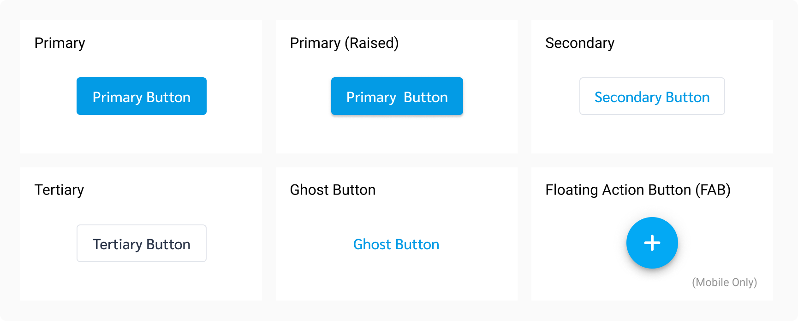

Button
Buttons allow users to take actions, and make choices, with a single tap.
| Types | Purpose |
|---|---|
| Primary | ใช้สำหรับ action ที่สำคัญที่สุดในหน้า โดยควรจะมีเพียงแค่หน้าละ 1 ปุ่มเท่านั้น เพื่อให้ user focus ที่ action หลักที่ต้องทำได้ดีที่สุด |
| Primary (Raised) | คือ Primary Button ที่ถูกเน้นให้ความสำคัญเด่นขึ้น กรณีที่ต้องวางอยู่ในหน้าที่มีของเยอะ เช่น Dashboard |
| Secondary | ใช้สำหรับ action ทั่วไปที่ต้องการให้ user กด แต่มีสำคัญรองลงมาจาก primary button |
| Tertiary | คือ ปุ่มที่ใช้สำหรับ action ที่ต้องใช้ในบางกรณี แต่ไม่ได้อยู่ใน action หลักที่ user ต้องทำ เช่น ปุ่มติดตาม/ซื้อกองทุน ในหน้ารายละเอียดกองทุน |
| Ghost | คือ ปุ่มที่ใช้สำหรับ action ที่สำคัญน้อยที่สุด หรืออยากให้ user กดน้อยที่สุด แต่ยังคงจำเป็นต้องมี เพื่อให้ใช้งานในบางกรณีได้ เช่น ปุ่ม Cancel ที่อยู่คู่กับปุ่ม Confirm ซึ่งเป็น primary button |
| FAB | เหมือนปุ่ม Primary Button (Rasied) แต่ใช้สำหรับกรณีมือถือเท่านั้น |
Spec
Button (No Icon)

Button (with Icon)
Example
The following HTML code is based off the Ahancer Seed :D
Primary Button
<button type="button" class="btn btn-primary">Primary Button</button>